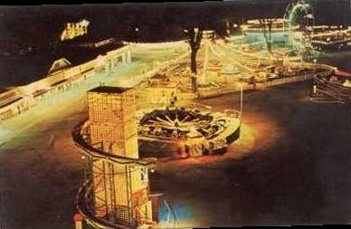
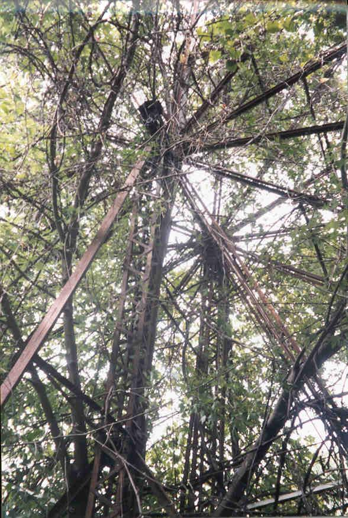
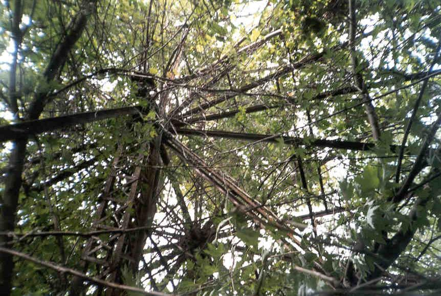

People came to Chippewa Lake Park to play carny games and eat unhealthy, delicious food, as well as to enjoy dances, swimming, and other attractions along the lakefront, but more than anything people visit a large amusement park like this one to ride the rides. There are the roller coaster, of course--main attractions when everything was open and still the most prominent feature of the park in ruins. But the midway is always a major part of any amusement attraction, from the creakiest travelling carnival to the most well-established family fun park.

Chippewa Lake's midway included rides of all sorts, many variations on the classic fun rides you've probably ridden a dozen times at a dozen different places. Many were removed or relocated over the years as the layout of the park changed, but of the rides and games still in place in 1978 some trace remains of nearly every one. Here we take a look at some of the most prominent, as well as the smaller attractions falling to pieces along the fringe of the park.
Ferris Wheel
Probably the neatest single sight on any tour through the modern Chippewa Lake is the ferris wheel, forever stopped in place by the huge many-limbed tree growing through it.

Like so much else at the park, the ferris wheel is borderline invisible when the leaves are green. It's not just the bushes and weeds all around that obscure it from view, though; it actually has its own tree which somehow took root right beneath the place where people got in and out of the cars.
All of the cars (or benches, or cages--whatever they were) have been removed, leaving the wheel empty but unmistakable for what it is. From some of the older photos I've seen I'm guessing they sold them shortly after closing up.

Other than the roller coasters--specifically the Big Dipper--this is probably the most distinctive relic on exhibit in the abandoned park. It might survive long after they've demolished everything else, just because it's got to be a pain in the ass to disassemble a ferris wheel from around a gigantic tree.
Flying Cages
One of the few instances of ride cars being left behind after they shut the park down, the Flying Cages are distinctive, colorful cages that were spun around vertically. The first photo here shows them at a distance, partially obscured by greenery.
Next, some closer shots of the ride cages themselves, which are pretty cool in their still-vibrant yellow, green, red, and blue paintjobs. They look like you could climb inside and take a ride right now, four-foot grass or no four-foot grass.

This ride is in probably the best shape of any at Chippewa these days--which is not to say that you could ever put it back into use again. Getting it out would be quite a chore, and I suppose they would have sold it if it were worth it financially.
The Flying Cages stand between the weed-choked main stretch of Midway and the former lakefront pier rides. At their apex they must have given a great view of the lake, especially at night. Now they rest at the bottom of their rotation, rusted into place (mostly--they have been known to grudgingly move when pushed) and nearly inaccessible in the warm months thanks to that ubiquitous greenery.
Tumble Bug
In the same vein as carnival favorie The Scrambler, Chippewa Lake's Tumble Bug was a contained, spinning ride with cars that spun independently of the arms they were mounted on--each of which rotated swiftly as the machine spun and the arms hissed while hydrolic pressure raised and lowered them.
This one was put together by Harry Traver, noted ride engineer; he sometimes called this ride the Turtle, which might give you an idea how non-threatening it was overall. Lots of families had fun on this relatively un-scary ride together over the years, and now all that remains of it in the woods off Chippewa Lake is the rusty and immobile set of cars pictured below.
The ride's entrance can still be picked out from among the filth and obscuring weeds, minus a few letters.
The Funhouse
Who knows what thrills were to be had in the CL Funhouse? It's gone now, though it survived for a few decades beyond the closing of the whole works. Here you can see the caged-in ticket booth, completely impossible to reach thanks to fallen timbers and roof beams.
And then there's the wall of the building, viewed from outside, as well as what remains of the mostly-collapsed exit.

I'm sorry I wasn't able to check this one out from the inside. The only thing better than a Funhouse is a Spookhouse, but we didn't see one of those on our trip through the park.
Miss Chippewa Tourboat
Saddest of all is the sight of the pleasure boat, Miss Chippewa, permanently grounded and rotting away beyond uselessness into a pile of scrap.
Once this boat--the last in a line of similar passenger boats used for scenic trips around the lake--held dozens of passengers at a time and provided one of the more relaxing and introspective experiences the park had to offer. Now you can still walk down the deck, beneath the canopy that used to protect the patrons from sunburn, but it's canted at an angle and there's no way this boat will ever see the water again, unless it's at the bottom of it.
All of them are interesting rides, the remnants of a truly great old-school amusement park midway. Many have been skipped here, particularly the ones of which no trace remains; from the aerial park photo (taken in the 50s or 60s, as best as I can tell) it shows a Wave Swinger--the same sort of distinctive ride, most famous on the Coney Island boardwalk, which appears on the cover of the Dave Matthews album Under the Table and Dreaming. Needless to say, nothing remains of it today. Check the remaining rides and games out for yourself whenever you have the chance to visit the park.
To visit the rest of the Chippewa Lake section, click on roller coasters, lakefront attractions, and the ballroom and other buildings, as well as many historic images.

Back
forgottenohio@yahoo.com